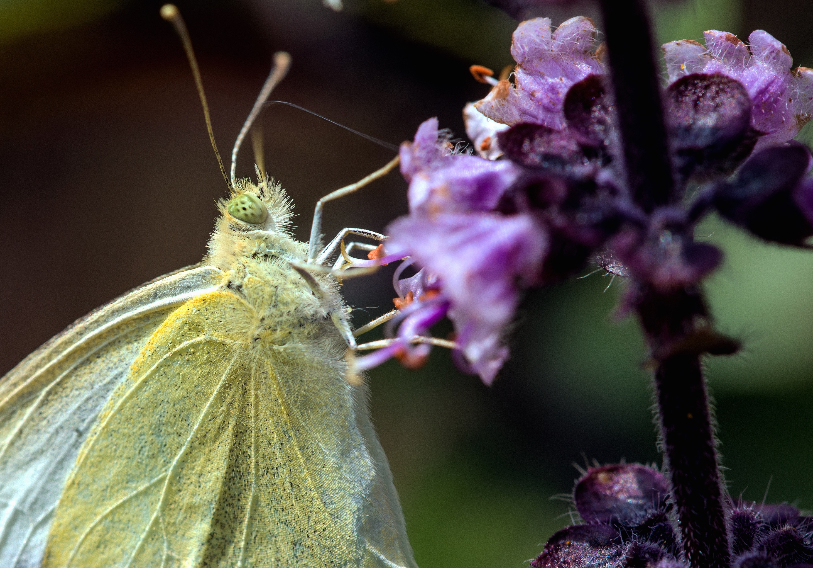
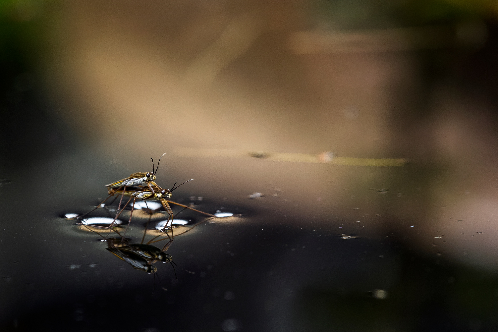
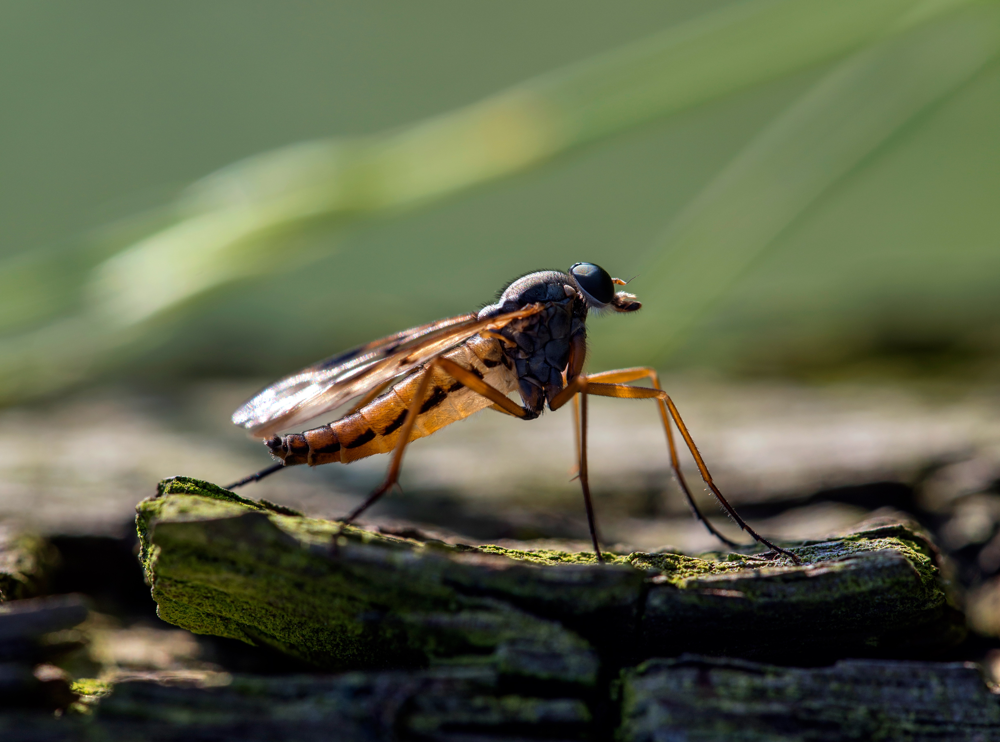
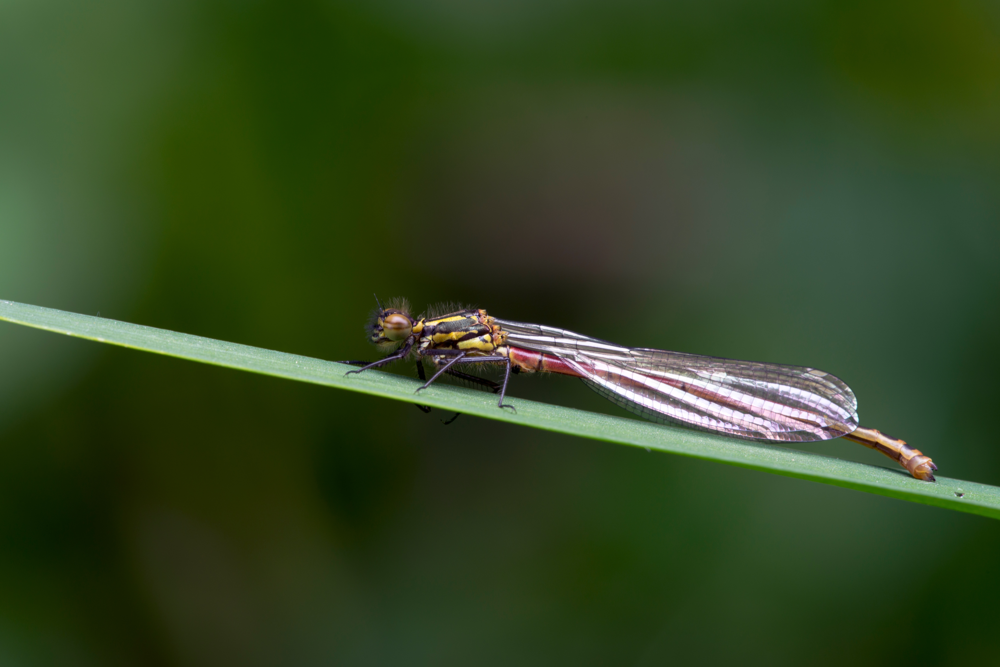
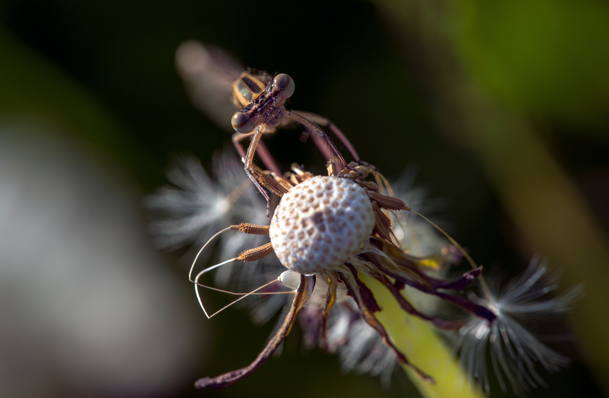

Photography · Macro
The world in miniature
Macro photographs from gardens, meadows and woods – each with its own small story.
Photo gallery
Scorpionfly

Butterflies

Insects


Damselflies


More themes
Spiders · Reptiles & amphibians · Plants & details · Other discoveries Photos to follow